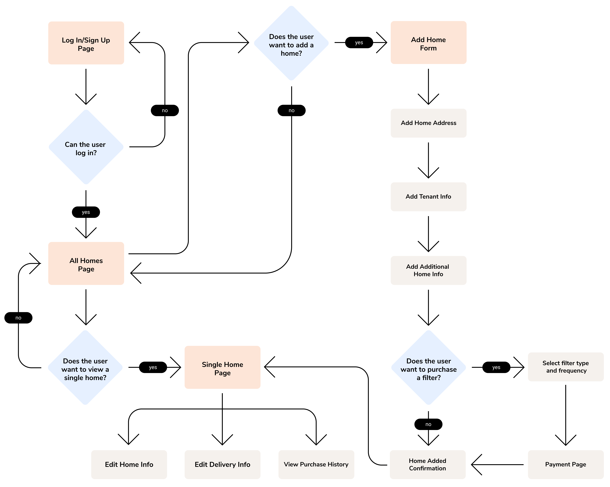
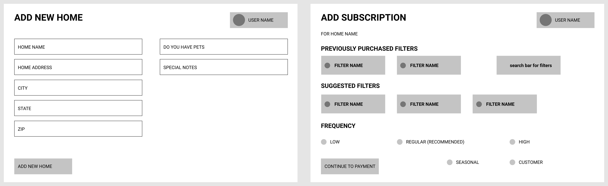
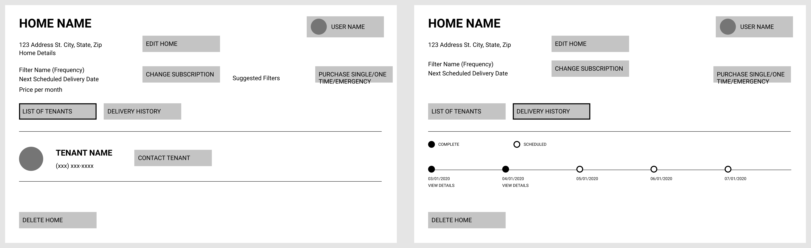

01 Project Context
AC units require regular filter changes to preserve their lifespan. However, as temporary residents, tenants are less motivated to perform upkeep on their unit. Creating an online system to regularly deliver filters when needed will help ensure that filter replacement is performed on time.
Problem Statement
How can we help private homeowners increase the lifespan of AC units to reduce costs to maintain their properties?
02 Research
Primary Research & Findings
- The two most expensive systems to replace are the roof and AC/HVAC systems
- Costs to replace broken AC units fall entirely on the homeowner
- Only 50% of homeowners surveyed use online systems to manage their properties
- Over 53% of tenants surveyed do not know how to change an air filter
Secondary Research
-
Private homeowners typically budget about 4% of their property's value in annual maintenance costs or 50% of the rental property income.
- For a $300k home, this is between $12k-$18k per year towards maintence costs
- Basic AC units cost between $3.6k to $6k to replace, higher quality units can cost upwards of $12k
- Common causes of AC failure include clogged air filters and lack of maintenance
03 Concept Development
Personas
I created two personas to highlight some goals and pain points from homeowners and tenants, our primary users.
Klaus, a private homeowner for 10+ years
- Has no time to monitor all of the homes he rents out
- Would like to reduce costs across all homes
- Does not regularly contact his tenants
Manfred, a college student renting from Klaus
- Has lived with his parents until moving for college
- Does not know how to maintain a home
- Rarely does chores because of his busy schedule
User Stories
In addition to the personas, I developed user stories to guide the product concept and listed primary features needed for basic functionality.
- As a homeowner, I want to manage all my homes on a single platform
- As a homeowner, I want to send each property different hardware
- As a homeowner, I want to verify that my tenants have replaced their filter
- As a homeowner, I want to have a purchase history for each home to record costs
04 Wireframing
User Flow Diagram
Different paths that the user can take when interacting with the application
Low-fidelity Prototypes
Each set of wireframes below illustrates one of the major user paths that can be taken.
Initially logging in, signing up for an account
Adding a new home to the account and purchasing a subscription
Viewing homes that have been added to the account
05 Visual Design
Component Library
High-fidelity Prototypes
06 Testing & Validation
Usability Tests
Several of our users included positive comments about having a clean UI, but wanting additional features. Some direct quotes from these interviews can be found below:
- “It was a little unintuitive if you want to go through the steps out of order.”
- “It is better [than current setup] because I will not have to go to the store when it is time to change air filters and I often forget to change them as often as I should anyways.”
- “Could have text reminders or email alerts when it is time to change the filter.”
- “I think a useful feature would be an unsubscribe or delay feature.“
Key Takeaways
There is need to expand this application for both the benefit of homeowners and tenants. These additions should include shipping additional products outside of air filters and improving communication between the homeowner and their tenants. The additional features requested by users during the interviews should be tested for future implementation to create a more holistic product that helps homeowners reduce costs across their properties.
For future projects, I would like to be able to test several ideas with users before commiting to a solution.